Japan / Yamaguchi / Shimonoseki
Shimonoseki
Shimonoseki · Yamaguchi
Shimonoseki
Highlighted on the Yamaguchi map.
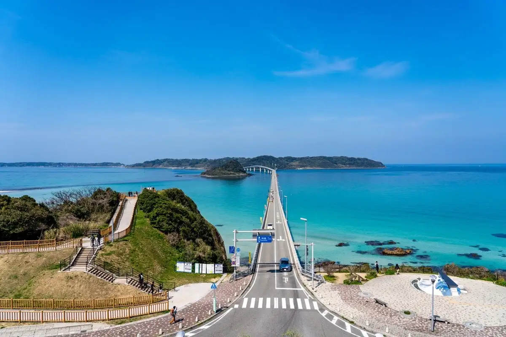
Sights
Kaku Shima Bridge
Karato Market
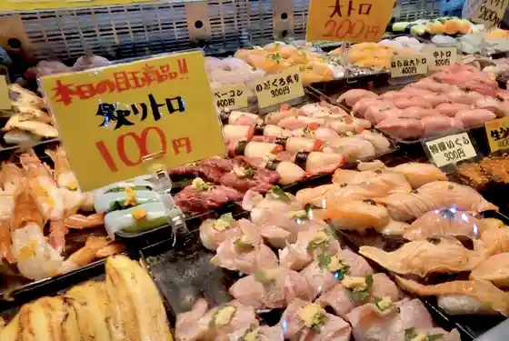
Kaku Shima
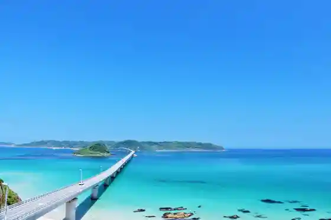
Kanmon Tonneru
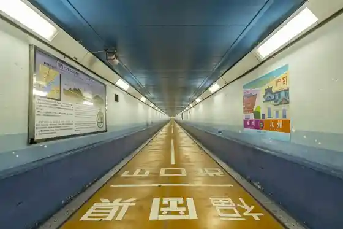
Hi no Yama Park
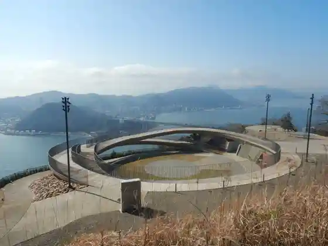
Gan Ryu Shima
Dan Yuki Ura Kosenjo Ato (Mimosuso Kawa Park)
Kanmonkaikyo
Shimonoseki Opuntoppubasu Kaku Shima Line Kanmonkaikyo Line
Kanmonkyo
Shimonoseki Ritsu Shimo no Seki Aquarium (Umi Kyo Kan)
Akama Shrine
Ko Yamadera
Fukutoku Inari Shrine
Castle Town Chofu
Kaku Shima Lighthouse / Kaku Shima Todai Park
Ichi no Mata Sakura Park
(Toma Ttemitsukeru Anatadake no # Shimonoseki Hiyori) Shimo no Seki Shukuhaku Oen Kyanpen
Kamonwafu
Hai ! Karatto Alley
Toyoda Town no Nashi Kari
Roadside Station Kitaura Kaido Hohoku
Kawatana Onsen
Bi Sa no Hana
Ichi no Mata Onsen
Ovijon Kaikyo Yume Tawa
Roadside Station Hotaru Kaido Nishi no City
Rifuresshu Park Toyora
Nagato Kuniichi Miyazumi Kichi Shrine
Chofu Mori Tei
Fugu Gacha Fugu no Jidohambaikigatojo
Kaku Shima Ohama Campground
Toyoda Town Ringo Kari
Shimonoseki Tsuku no Onsen
Chofu Garden
Shimonoseki Toyoda Town (Hotaru Fune)
Toko Iori
Tsuchiigahama Coast (Beach Campground)
Kochi Zu Wo Katate Ni, Machiwo Aruko U Kikangentei Kaido Uoku Akamagaseki Kaido (Hagi City Mine City Shimonoseki)
Kameyama Hachiman Shrine
Kawatana no Kusu Forest
Toyoda Hotaru no Sato Museum
Kochi Zu Wo Katate Nimachiwo Aruko U (Akamagaseki Hen)
Tsuchiigahama Iseki Jinruigaku Museum
Kaku Shima Tokutoku
Kochi Zu Wo Katate Nimachiwo Aruko U (Castle Town Chofu Hen)
Kaikyo Messe Shimonoseki
Roadside Station
Nogi Shrine
Kaku Shima Ohama Beach
Shiokaze no Sato Kaku Shima Kaisetsu 25 Shunen Kinen Ibento
Kanko Ressha WEST EXPRESS Ginga
Juyo Bunkazai Kyu Shimonoseki Eikokuryo Koto Kan
Kyu Akita Shokai Biru
Shimonoseki Ritsu History Museum
Shin Shimonoseki Eki Tourist Information
Shimonoseki Fisshingu Park
Toyoda Kohan Koen Campground
Shimonoseki Ritsu Hohoku Folk History Museum (Ta Sho Kan (Taishokan))
Toyoda Mizumi
Agawa Hosenguri Seaside Park
Takushii De Iku ! Shimonoseki Kanko Kosu
Ryuo Yama
Antoku Tenno Nishi City Goryo Haka (Sanko Chi)
Naki Suna Beach Ushirohama
Kaku Shima Saikurupoto
Umi Ko Sha
Kichi Haha Beach
Itsukushima Shrine
Ku Ryu Mago Yama Shuzen Tera
Hotel Nishi Nagato Resort
Shimonoseki Nambu Town Yubinkyoku
Hiyoriyama Park
Nakayama Shrine Aishinkakura Sha
Kochi Zu Wo Katate Nimachiwo Aruko U (Kawatana Hen)
Sekichu Kei
Myosei Tera
Yume Saki Nami no Park
Kawatana no Mori Korutohoru
Akada Beach
Shimonoseki Eki Tourist Information
Shimonoseki Ritto Gyo Memorial Museum
Nisshin Kowa Memorial Museum
Nishi no City Onsen Hotaru Baths
Kakuon Tera
Shin Saka Nature no Mori Campground
Ku Ryu Mago Yama
Shimonoseki Ga Hokoru Kokuho ! Sumiyoshi Jinja Honden no Tokubetsu Haikan
Yasura Garden
Guriinmoru Shopping Street
Tsu no Shima Shizen Kan
Fuku Kutto Sentei Matsuri Tayu Shosa Experience
Kihei Tai Jinya Ato
Toyoda Kohan Park
Chofu Han Samuraiyashiki Nagaya
Kaneko Misuzu Shi no Komichi
Insetsu Tera
Murotsu Beach
Ovijon Kaikyo Yume Tawa De Zekkei × Man Puku (Tawa Nyujoryo to Yamaguchi no Shokuzai Wo Tsukatta O Shokuji Setto)
Furue Koji Kanke Nagaya Mon
Takasugishinsaku Shuen no Chi
Futami Fufu Iwa
Nogi Hama General Park
Senjogahara Park
Umi no Ie Naminori Ri Jonii
Ro no Yama Park
Fune Gun Damu Lookout (Seiryu Mizumi)
Ueyama Fumihide Domoto Mise Ato
Otoshi Shrine
Shunpan Ro
Hohoku Town Tourism Association
Shiroishi Shoichiro Kyutei Ato
Yoru no Honya Wo Tanoshi Mo Newohasu Hotel Bukku & Kafe
Toyoda Nogyo Koen Mi no Ri no Oka
Kokubunji
Howaito Beach Shima Ko
Akada Beach Campground
Kyu Dono Kyo Yubinkyoku Sha
Kami Uedera
Yoshimi Onsen (Yoshimi Onsen Center)
Jozosho De Ajiwa U Shimonoseki San Kurafutobiiru
Kazan
Shimonoseki Ritsu Koko Museum
Honjin Ito Yashikiato
Hotel no Kuruma De Iku Kaku Shima Naito Tour
Kochi Zu Wo Katate Ni, Machiwo Aruko U (Akamagaseki Kaido (Kitaura Michisuji) Hen)
Wednesday Tour in OZUKI
Kaku Shima no Umi Wo Tojikome Ta, Sekai De Hitotsu no Kirakirakyandoru Zukuri Experience
Kawatana Onsen Tourism Association
Toyoda Town Tourism Association
Shimonoseki Shobo Bosai Gakushu Kan (Hikeshi Kujira)
Nagamasa Tsukasa Park
Ki Miya Shrine
Fuku no Homba Shimonoseki Fuku Shoku Experience
Tokusen Falls
Heike Odori
Kawatana Onsen Festival
Hama Shutsu Matsuri
Okochi Onsen
Futa Ijima
Kawatana Onsen Mori no Ashiyu Kyo Ryusen
Shimonoseki Ritsu Art Museum
Kawatana no Asagohan Kawatanamoningu
Utano Kawa Dam
Ryuo Yama Haikingukosu
Kankojoho Hasshin Taminaru
Ovijon Kaikyo Yume Tawa Nyujoryo to, Charyo Fuku no Hana Mataha Kamonwafu De no Shokuji no Settochigatto
Ekopia Forest Shimonoseki Shin Saka
Anyoji (Mokuzo Amida Nyorai Zazo)
Ryo En Tera
Sai Nobori Shinji
Yu no Hara Dam
Dai Ko Tani Komori Hora
Shimonoseki Minato Kokusai Taminaru Tourist Information
Kawatana Onsen Kanko Boranteiagaido no Kai
Kikugawa Onsen
Heike no Ippai Mizu
(Kabu) Eggu Puranto Yomogi Village
Kaku Shima Mankitsu Tour Tokutoku to Choshu Gurume
Hohoku Kyo
Ryoju Yama Haikingukosu
Fugu Sashi Shokunin Taiken Koza
Yutaka Ko Shrine
Yamaguchi Ginko Kyu Main Shop
Murotsu Campground
Takasugishinsaku Ryoyo no Chi
Tsunami Shiki Onsen
Nichi no Shutsu Onsen
Sakurayama Shrine (Shokon Sha)
Kobarutoburu Beach
Miyoshi Shashinkan Ato
Manju Kanju
Yasuoka Beach
Beisaido 104 (Koe Naka Sea Bathing Oto Campground)
Funo Kusurishi Higashiyama Tera
Koe Naka Sea Bathing Oto Campground
Akasaki Sha Raku Yo (Niwatori to Yo)
Mentaiko Zukuri Experience
Shioji Yama
Roku Ren Shima
Eki Rentaka Shimonoseki Eigyosho
Hikichi Kun no Haka
Ryora Ki Sato Iseki
Nakayama Kei
Kyu Naimusho Shimonoseki Doboku Shutchosho Inui Senkyo
Kan Midai Park (Kushi Saki Castle Ruins)
Fuku Raku Sha (Torafuku Ryori Experience)
Tsuchiigahama Bangaro
Ono Sho Town no Haka
Kamayaki Experience
Toko Ki
Fuku Kuyosai
Ta Ko Ajisai Sono
Shimonoseki Karasuyama Folk Museum
SDGs Ryuboku Ya Shiigurasu De Kosaku
Ogushi no Umi De SUP Taiken !
Onigashiro
Homba no Torafuku Furukosu to Yamaguchi no Nihonshu Pearingu
Shin Saka Tameike
Heike Kani
Nogi Kyutei
Jokan Tera
Nagato Chusen Tokoro Ato
Funo Coast
Kiya Kawa Genjibotaru Hassei Chi / Hotaru
Gan Ryu Shima Ikoi no Plaza
On Toku Tera no Musubi Ibuki
Hibikinada · Atsushi Shima Tembo Park
Ki Miya Shrine Ho Sha Matsuri
Warai Yamadera
YK Kanko Rentaka Shimonoseki
Toyotarentariisu Yamaguchi Shin Shimonoseki Ekimae Mise
Tsuchiigahama Iseki
Shimonoseki Kanko Gaido no Kai
Shimonoseki Ryokan Hotel Kyodokumiai
Nakayama Jinja Takaramono Dono
Nakayama Shrine
Yoshida Yado
Sankei Tera
Hitoshi Basan Burial Mound
Onigashiro Haikingukosu
Kawatana Onsen Seiryu Taiko
Ryora Kigawa
Ryoju Yama
Utano Seiryu Iori
Kurokawa Shashinkan Ato
Ta Takeshi no Mine Park
Wakamiya Sekizo Hoto
Kai Tomo Tera (Mei Han Issai Kei)
Toyora Miya Ki Miya Jinja Takaramono Dono
Kyu Miyazaki Shokan
Hagi Han Shinchi Kaisho Ato
Shioji Yama Haikingukosu
Kaku Shima Tokusan (Yuyake Imo) Tsubo Yaki Taiken Tour
Ho Sha Matsuri
Naka no Hama Iseki
Horin Tera
Roku Ren Shima no Unmo Gembu Iwa
Myoho Tera
Ichi no Se Castle Ruins
Hosen Tera
Hiko Shima Nishiyama no Kaseki So
Shimonoseki Chuo Rentaka
Nipponrentaka Shimonoseki Eki Nishiguchi Eigyosho
Kaji Kuri Hama Iseki
Kan Ko Yo
Kabe Shima U Torai Chi
Dai no Sei Henma Iwa
Kikugawa Mizugakari Fudo Mikoto
Ogushi Bon'odori
Kawatana Kawa
Taimuzukarentaru Shimonoseki Ekimae Mise
Kabe Shima
Aki Ne Ichigo Burial Mound
Koyasu Kannon
Agawa Mori Shi Hakasho
Kyomuso Haka
Kiku Sha Ama no Kuhi (Toku O Tera)
Kunimi Dai Forest Park
Ogushi Ehimeayame Jisei Nangen Chitai
Kanda Misaki
Nakayama Tadamitsu Haka
Awano Kawa
Uematsu Kofun Park
Miyayama Burial Mound
Ku Ryu Mago Yama Haikingukosu
Chuai Tenno Hin So Tokoro
Nippon Isan (Kanmon ” no Sutarujikku ” Kaikyo) Kurujingu (Kari)
Juni Dai Toyoda Tane Cho Tsuizen Kuyo Itabi
Yuu Yuu Plaza
Kazuhisa 1 Go Burial Mound
Shimonoseki Toyora Town Kuroi Sato Mori Ya Plaza / Hotaru
Sano Iwato Kagura no Mai
Aritomi Burial Mound
Dono Shiki no Toroniemu Iwa
Agawa Hachiman Shrine no Inumaki Kyoju Gun
Hohoku Funo Kusurishi Haikingukosu
Shimonoseki Yakusho
Dining
旬楽館
Jun Raku Kan
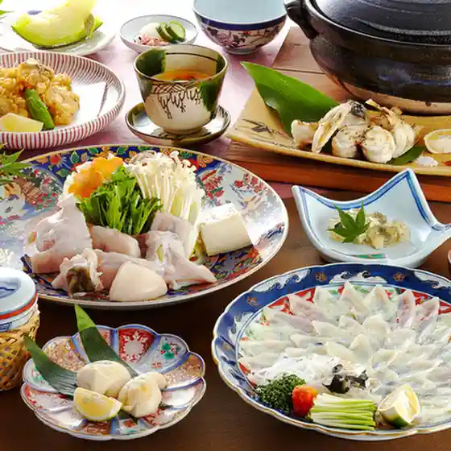
ふく・長州料理 KATSUMOTO
Fuku ・ Choushuu Ryouri Katsumoto
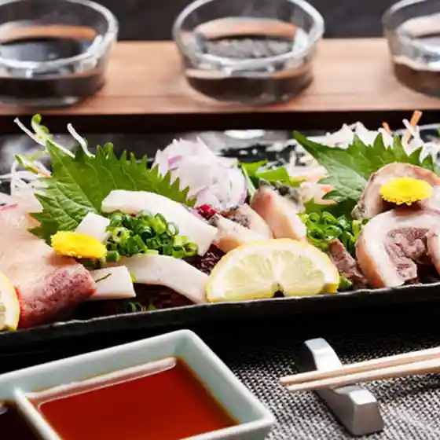
離れ 竜胆
Hanare Rindou
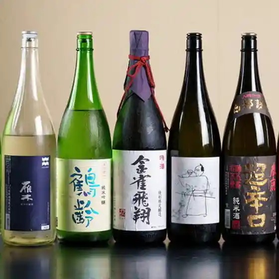
AKAMA布久亭
Akama Nuno Kyuu Tei
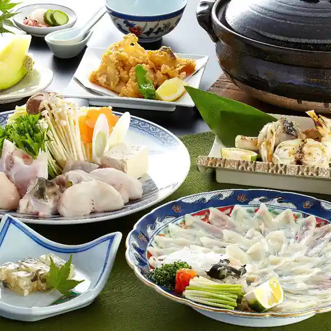
や台ずし 下関駅前町
Ya Dai Zushi Shimonosekieki Maemachi

旬彩炙りダイニング からと屋
Jun Sai Aburi Dainingu Karato Ya
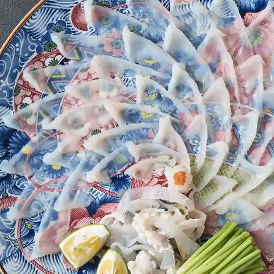
ゾーナイタリア 下関
Zoonaitaria Shimonoseki
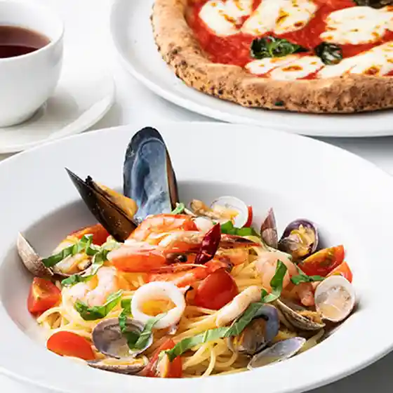
Houseki
Houseki
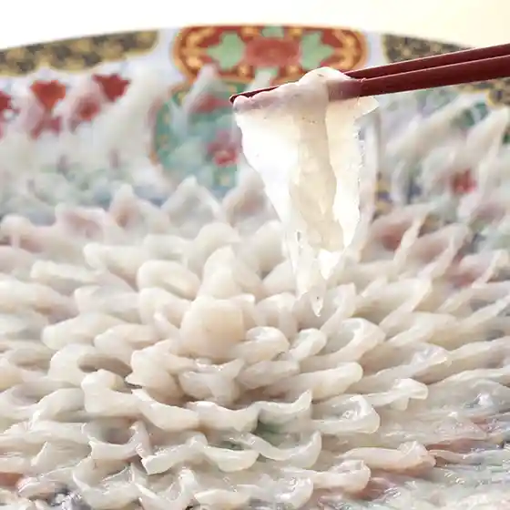
くいもの屋わん シーモール下関店
Kuimono Ya Wan Shiimooru Shimonoseki Mise
焼肉酒場ちゃやまや
Yakiniku Sakaba Chayamaya
個室で楽しむ九州料理 千鳥丸
Koshitsu De Tanoshi Mu Kyuushuu Ryouri Chidori Maru
下関ふく百花 関とら本店
Shimonoseki Fuku Hyakka Kan Tora Honten
牛角 下関カモンワーフ店
Gyuukaku Shimonoseki Kamonwaafu Mise
ワールドコーヒーショップ 王司店
Waarudokoohiishoppu Ouji Mise
相撲茶屋 長州場所
Sumou Chaya Choushuu Basho
しゃぶしゃぶ瓦そば 茶寮福の花
Shabushabu Kawara Soba Charyou Fuku No Hana
豊丸水産 下関駅前店
Toyomaru Suisan Shimonosekieki Mae Mise
酔処きりしま
Sui Tokoro Kirishima
Osteria WAKKA。
Osteria Wakka .
唐戸唐揚げ 角打ち えっこ
Karato Karaage Kaku Uchi Ekko
たまや本店
Tamaya Honten
日本酒処 なごみ
Nihonshu Tokoro Nagomi
縁
Heri
BAR VITA
Bar Vita
寿し 四海
Hisashi Shi Shikai
魚民 下関東口駅前店
Uotami Shimonoseki Higashiguchi Ekimae Mise
唐戸海鮮バーベキュー侍
Karato Kaisen Baabekyuu Samurai
さかな市場 下関駅前店
Sakana Shijou Shimonosekieki Mae Mise
Bar HAON
Bar Haon
スペイン酒場ウニコ
Supein Sakaba Uniko
下関鯨屋 日新丸
Shimonoseki Kujira Ya Nisshin Maru
居酒屋 笑顔満点
Izakaya Egao Manten
旬の食と楽しい酒 和
Jun No Kutto Tanoshii Sake Wa
燻製屋
Kunsei Ya
焼肉かわ本 下関綾羅木店
Yakiniku Kawa Hon Shimonoseki Ryoura Ki Mise
炭火焼肉ホルモン横丁 下関店
Sumibi Yakiniku Horumon Yokochou Shimonoseki Mise
レストラン ラ カシェット
Resutoran Ra Kashietto
ピッツェリア ロマーナ リンコントロ
Pittsueria Romaana Rinkontoro
炭火焼き鳥 将軍
Sumibi Yakitori Shougun
Hello Again
Hello Again
中国料理 敦煌 山口下関店
Chuugokuryouri Tonkou Yamaguchi Shimonoseki Mise
Italian Kitchen VANSAN 下関一の宮店
Italian Kitchen Vansan Shimonoseki Ichi No Miya Mise
黒かしわ
Kuroka Shiwa
宝仙
Housen
下関個室居酒屋 伊蔵
Shimonoseki Koshitsu Izakaya Izou
ゆめぜん 下関店
Yumezen Shimonoseki Mise
居酒屋厨房 ふじい
Izakaya Chuubou Fujii
焼肉 ばか盛屋
Yakiniku Baka Jou Ya
ナンダン シーモール店
Nandan Shiimooru Mise
Ensoleil Takumi
Ensoleil Takumi
ゑびす門
Ebisu Mon
コメダ珈琲店 下関綾羅木店
Komeda Koohii Mise Shimonoseki Ryoura Ki Mise
インド料理マサラカレー 新下関店
Indo Ryouri Masarakaree Shinshimonoseki Mise
割烹旅館 寿美礼
Kappou Ryokan Sumire
DtheBASE
Dthebase
どん兵衛
Don Bee
オネット
Onetto
自然派ダイニング 森と灯
Shizen Ha Dainingu Mori To Tomoshibi
春帆楼 下関本店
Shunpan Rou Shimonoseki Honten
宮の内茶寮
Miya No Nai Charyou
Ikiiki Bakangai Shimonoseki Yamaguchi Prefecture Chugoku
Ikiiki Bakangai Shimonoseki Yamaguchi Prefecture Chugoku
Ikiiki Bakangai Shimonoseki Yamaguchi Prefecture Chugoku
Ikiiki Bakangai Shimonoseki Yamaguchi Prefecture Chugoku
Ikiiki Bakangai Shimonoseki Yamaguchi Prefecture Chugoku
Ikiiki Bakangai Shimonoseki Yamaguchi Prefecture Chugoku
Ikiiki Bakangai Shimonoseki Yamaguchi Prefecture Chugoku
Ikiiki Bakangai Shimonoseki Yamaguchi Prefecture Chugoku
Ichibashokudo Yoshi Shimonoseki Yamaguchi Prefecture Chugoku
Ichibashokudo Yoshi Shimonoseki Yamaguchi Prefecture Chugoku
Ichibashokudo Yoshi Shimonoseki Yamaguchi Prefecture Chugoku
Ichibashokudo Yoshi Shimonoseki Yamaguchi Prefecture Chugoku
Ichibashokudo Yoshi Shimonoseki Yamaguchi Prefecture Chugoku
Ichibashokudo Yoshi Shimonoseki Yamaguchi Prefecture Chugoku
Ichibashokudo Yoshi Shimonoseki Yamaguchi Prefecture Chugoku
Ichibashokudo Yoshi Shimonoseki Yamaguchi Prefecture Chugoku
Mimasu Shimonoseki Yamaguchi Prefecture Chugoku
Mimasu Shimonoseki Yamaguchi Prefecture Chugoku
Mimasu Shimonoseki Yamaguchi Prefecture Chugoku
Mimasu Shimonoseki Yamaguchi Prefecture Chugoku
Mimasu Shimonoseki Yamaguchi Prefecture Chugoku
Mimasu Shimonoseki Yamaguchi Prefecture Chugoku
Mimasu Shimonoseki Yamaguchi Prefecture Chugoku
Mimasu Shimonoseki Yamaguchi Prefecture Chugoku
Ganso Kawarasoba Takase Shimonoseki Yamaguchi Prefecture Chugoku
Ganso Kawarasoba Takase Shimonoseki Yamaguchi Prefecture Chugoku
Ganso Kawarasoba Takase Shimonoseki Yamaguchi Prefecture Chugoku
Ganso Kawarasoba Takase Shimonoseki Yamaguchi Prefecture Chugoku
Ganso Kawarasoba Takase Shimonoseki Yamaguchi Prefecture Chugoku
Ganso Kawarasoba Takase Shimonoseki Yamaguchi Prefecture Chugoku
Ganso Kawarasoba Takase Shimonoseki Yamaguchi Prefecture Chugoku
Ganso Kawarasoba Takase Shimonoseki Yamaguchi Prefecture Chugoku
Okamoto Sengyoten Shimonoseki Yamaguchi Prefecture Chugoku
Okamoto Sengyoten Shimonoseki Yamaguchi Prefecture Chugoku
Okamoto Sengyoten Shimonoseki Yamaguchi Prefecture Chugoku
Okamoto Sengyoten Shimonoseki Yamaguchi Prefecture Chugoku
Okamoto Sengyoten Shimonoseki Yamaguchi Prefecture Chugoku
Okamoto Sengyoten Shimonoseki Yamaguchi Prefecture Chugoku
Okamoto Sengyoten Shimonoseki Yamaguchi Prefecture Chugoku
Okamoto Sengyoten Shimonoseki Yamaguchi Prefecture Chugoku
Heikejaya Shimonoseki Yamaguchi Prefecture Chugoku
Heikejaya Shimonoseki Yamaguchi Prefecture Chugoku
Heikejaya Shimonoseki Yamaguchi Prefecture Chugoku
Heikejaya Shimonoseki Yamaguchi Prefecture Chugoku
Heikejaya Shimonoseki Yamaguchi Prefecture Chugoku
Heikejaya Shimonoseki Yamaguchi Prefecture Chugoku
Heikejaya Shimonoseki Yamaguchi Prefecture Chugoku
Heikejaya Shimonoseki Yamaguchi Prefecture Chugoku
Kaiten Karatoichibazushi Shimonoseki Yamaguchi Prefecture Chugoku
Kaiten Karatoichibazushi Shimonoseki Yamaguchi Prefecture Chugoku
Kaiten Karatoichibazushi Shimonoseki Yamaguchi Prefecture Chugoku
Kaiten Karatoichibazushi Shimonoseki Yamaguchi Prefecture Chugoku
Kaiten Karatoichibazushi Shimonoseki Yamaguchi Prefecture Chugoku
Kaiten Karatoichibazushi Shimonoseki Yamaguchi Prefecture Chugoku
Kaiten Karatoichibazushi Shimonoseki Yamaguchi Prefecture Chugoku
Kaiten Karatoichibazushi Shimonoseki Yamaguchi Prefecture Chugoku
Jidorishuka Kurokashiwa Shimonoseki Shimonoseki Yamaguchi Prefecture Chugoku
Jidorishuka Kurokashiwa Shimonoseki Shimonoseki Yamaguchi Prefecture Chugoku
Jidorishuka Kurokashiwa Shimonoseki Shimonoseki Yamaguchi Prefecture Chugoku
Jidorishuka Kurokashiwa Shimonoseki Shimonoseki Yamaguchi Prefecture Chugoku
Jidorishuka Kurokashiwa Shimonoseki Shimonoseki Yamaguchi Prefecture Chugoku
Jidorishuka Kurokashiwa Shimonoseki Shimonoseki Yamaguchi Prefecture Chugoku
Takesho Foods Shimonoseki Yamaguchi Prefecture Chugoku
Takesho Foods Shimonoseki Yamaguchi Prefecture Chugoku
Takesho Foods Shimonoseki Yamaguchi Prefecture Chugoku
Takesho Foods Shimonoseki Yamaguchi Prefecture Chugoku
Takesho Foods Shimonoseki Yamaguchi Prefecture Chugoku
Takesho Foods Shimonoseki Yamaguchi Prefecture Chugoku
Takesho Foods Shimonoseki Yamaguchi Prefecture Chugoku
Takesho Foods Shimonoseki Yamaguchi Prefecture Chugoku
Yabure Kabure Shimonoseki Yamaguchi Prefecture Chugoku
Yabure Kabure Shimonoseki Yamaguchi Prefecture Chugoku
Yabure Kabure Shimonoseki Yamaguchi Prefecture Chugoku
Yabure Kabure Shimonoseki Yamaguchi Prefecture Chugoku
Yabure Kabure Shimonoseki Yamaguchi Prefecture Chugoku
Yabure Kabure Shimonoseki Yamaguchi Prefecture Chugoku
Yabure Kabure Shimonoseki Yamaguchi Prefecture Chugoku
Yabure Kabure Shimonoseki Yamaguchi Prefecture Chugoku
Mittsu Notamago Shimonoseki Yamaguchi Prefecture Chugoku
Mittsu Notamago Shimonoseki Yamaguchi Prefecture Chugoku
Mittsu Notamago Shimonoseki Yamaguchi Prefecture Chugoku
Mittsu Notamago Shimonoseki Yamaguchi Prefecture Chugoku
Mittsu Notamago Shimonoseki Yamaguchi Prefecture Chugoku
Mittsu Notamago Shimonoseki Yamaguchi Prefecture Chugoku
Mittsu Notamago Shimonoseki Yamaguchi Prefecture Chugoku
Mittsu Notamago Shimonoseki Yamaguchi Prefecture Chugoku
Sakana Ichiba Shimonoseki Ekimae Shimonoseki Yamaguchi Prefecture Chugoku
Sakana Ichiba Shimonoseki Ekimae Shimonoseki Yamaguchi Prefecture Chugoku
Sakana Ichiba Shimonoseki Ekimae Shimonoseki Yamaguchi Prefecture Chugoku
Sakana Ichiba Shimonoseki Ekimae Shimonoseki Yamaguchi Prefecture Chugoku
Sakana Ichiba Shimonoseki Ekimae Shimonoseki Yamaguchi Prefecture Chugoku
Sakana Ichiba Shimonoseki Ekimae Shimonoseki Yamaguchi Prefecture Chugoku
Sakana Ichiba Shimonoseki Ekimae Shimonoseki Yamaguchi Prefecture Chugoku
Sakana Ichiba Shimonoseki Ekimae Shimonoseki Yamaguchi Prefecture Chugoku
Sakana Ichiba Shimonoseki Ekimae Shimonoseki Yamaguchi Prefecture Chugoku
Sakana Ichiba Shimonoseki Ekimae Shimonoseki Yamaguchi Prefecture Chugoku
Shoeikentoyoura Blue Line Shimonoseki Yamaguchi Prefecture Chugoku
Shoeikentoyoura Blue Line Shimonoseki Yamaguchi Prefecture Chugoku
Shoeikentoyoura Blue Line Shimonoseki Yamaguchi Prefecture Chugoku
Shoeikentoyoura Blue Line Shimonoseki Yamaguchi Prefecture Chugoku
Shoeikentoyoura Blue Line Shimonoseki Yamaguchi Prefecture Chugoku
Shoeikentoyoura Blue Line Shimonoseki Yamaguchi Prefecture Chugoku
Shoeikentoyoura Blue Line Shimonoseki Yamaguchi Prefecture Chugoku
Shoeikentoyoura Blue Line Shimonoseki Yamaguchi Prefecture Chugoku
Fugu Cuisine Shinoda Shimonoseki Yamaguchi Prefecture Chugoku
Fugu Cuisine Shinoda Shimonoseki Yamaguchi Prefecture Chugoku
Fugu Cuisine Shinoda Shimonoseki Yamaguchi Prefecture Chugoku
Fugu Cuisine Shinoda Shimonoseki Yamaguchi Prefecture Chugoku
Fugu Cuisine Shinoda Shimonoseki Yamaguchi Prefecture Chugoku
Fugu Cuisine Shinoda Shimonoseki Yamaguchi Prefecture Chugoku
Fugu Cuisine Shinoda Shimonoseki Yamaguchi Prefecture Chugoku
Fugu Cuisine Shinoda Shimonoseki Yamaguchi Prefecture Chugoku
Fugu Cuisine Shinoda Shimonoseki Yamaguchi Prefecture Chugoku
Fugu Cuisine Shinoda Shimonoseki Yamaguchi Prefecture Chugoku
Fugu Cuisine Shinoda Shimonoseki Yamaguchi Prefecture Chugoku
Fugu Cuisine Shinoda Shimonoseki Yamaguchi Prefecture Chugoku
Shunrakukan Shimonoseki Yamaguchi Prefecture Chugoku
Shunrakukan Shimonoseki Yamaguchi Prefecture Chugoku
Shunrakukan Shimonoseki Yamaguchi Prefecture Chugoku
Shunrakukan Shimonoseki Yamaguchi Prefecture Chugoku
Sushi Kappo Naniwa Shimonoseki Yamaguchi Prefecture Chugoku
Sushi Kappo Naniwa Shimonoseki Yamaguchi Prefecture Chugoku
Sushi Kappo Naniwa Shimonoseki Yamaguchi Prefecture Chugoku
Sushi Kappo Naniwa Shimonoseki Yamaguchi Prefecture Chugoku
Hiroshima Okonomiyaki Kokoya Shimonoseki Yamaguchi Prefecture Chugoku
Hiroshima Okonomiyaki Kokoya Shimonoseki Yamaguchi Prefecture Chugoku
Hiroshima Okonomiyaki Kokoya Shimonoseki Yamaguchi Prefecture Chugoku
Hiroshima Okonomiyaki Kokoya Shimonoseki Yamaguchi Prefecture Chugoku
Yorozu Cafe Shimonoseki Yamaguchi Prefecture Chugoku
Yorozu Cafe Shimonoseki Yamaguchi Prefecture Chugoku
Yorozu Cafe Shimonoseki Yamaguchi Prefecture Chugoku
Yorozu Cafe Shimonoseki Yamaguchi Prefecture Chugoku
Rerere no Re Shimonoseki Yamaguchi Prefecture Chugoku
Rerere no Re Shimonoseki Yamaguchi Prefecture Chugoku
Rerere no Re Shimonoseki Yamaguchi Prefecture Chugoku
Rerere no Re Shimonoseki Yamaguchi Prefecture Chugoku
Gabbiano Shimonoseki Yamaguchi Prefecture Chugoku
Gabbiano Shimonoseki Yamaguchi Prefecture Chugoku
Gabbiano Shimonoseki Yamaguchi Prefecture Chugoku
Gabbiano Shimonoseki Yamaguchi Prefecture Chugoku
Gabbiano Shimonoseki Yamaguchi Prefecture Chugoku
Gabbiano Shimonoseki Yamaguchi Prefecture Chugoku
Gabbiano Shimonoseki Yamaguchi Prefecture Chugoku
Gabbiano Shimonoseki Yamaguchi Prefecture Chugoku
Fukunoseki Kamonwafuten Shimonoseki Yamaguchi Prefecture Chugoku
Fukunoseki Kamonwafuten Shimonoseki Yamaguchi Prefecture Chugoku
Fukunoseki Kamonwafuten Shimonoseki Yamaguchi Prefecture Chugoku
Fukunoseki Kamonwafuten Shimonoseki Yamaguchi Prefecture Chugoku
Fukunoseki Kamonwafuten Shimonoseki Yamaguchi Prefecture Chugoku
Fukunoseki Kamonwafuten Shimonoseki Yamaguchi Prefecture Chugoku
Fukunoseki Kamonwafuten Shimonoseki Yamaguchi Prefecture Chugoku
Fukunoseki Kamonwafuten Shimonoseki Yamaguchi Prefecture Chugoku
Yakiniku Yasumori Shimonoseki Green Mall Shimonoseki Yamaguchi Prefecture Chugoku
Yakiniku Yasumori Shimonoseki Green Mall Shimonoseki Yamaguchi Prefecture Chugoku
Yakiniku Yasumori Shimonoseki Green Mall Shimonoseki Yamaguchi Prefecture Chugoku
Yakiniku Yasumori Shimonoseki Green Mall Shimonoseki Yamaguchi Prefecture Chugoku
Yakiniku Yasumori Shimonoseki Green Mall Shimonoseki Yamaguchi Prefecture Chugoku
Yakiniku Yasumori Shimonoseki Green Mall Shimonoseki Yamaguchi Prefecture Chugoku
Yakiniku Yasumori Shimonoseki Green Mall Shimonoseki Yamaguchi Prefecture Chugoku
Yakiniku Yasumori Shimonoseki Green Mall Shimonoseki Yamaguchi Prefecture Chugoku
Fukunokawaku Karato Shimonoseki Yamaguchi Prefecture Chugoku
Fukunokawaku Karato Shimonoseki Yamaguchi Prefecture Chugoku
Fukunokawaku Karato Shimonoseki Yamaguchi Prefecture Chugoku
Fukunokawaku Karato Shimonoseki Yamaguchi Prefecture Chugoku
Fukunokawaku Karato Shimonoseki Yamaguchi Prefecture Chugoku
Fukunokawaku Karato Shimonoseki Yamaguchi Prefecture Chugoku
Fukunokawaku Karato Shimonoseki Yamaguchi Prefecture Chugoku
Fukunokawaku Karato Shimonoseki Yamaguchi Prefecture Chugoku
Mannaoshi Shimonoseki Yamaguchi Prefecture Chugoku
Mannaoshi Shimonoseki Yamaguchi Prefecture Chugoku
Mannaoshi Shimonoseki Yamaguchi Prefecture Chugoku
Mannaoshi Shimonoseki Yamaguchi Prefecture Chugoku
Mannaoshi Shimonoseki Yamaguchi Prefecture Chugoku
Mannaoshi Shimonoseki Yamaguchi Prefecture Chugoku
Mannaoshi Shimonoseki Yamaguchi Prefecture Chugoku
Mannaoshi Shimonoseki Yamaguchi Prefecture Chugoku
Kameya Sea Mall Shimonoseki Yamaguchi Prefecture Chugoku
Kameya Sea Mall Shimonoseki Yamaguchi Prefecture Chugoku
Kameya Sea Mall Shimonoseki Yamaguchi Prefecture Chugoku
Kameya Sea Mall Shimonoseki Yamaguchi Prefecture Chugoku
Kameya Sea Mall Shimonoseki Yamaguchi Prefecture Chugoku
Kameya Sea Mall Shimonoseki Yamaguchi Prefecture Chugoku
Kameya Sea Mall Shimonoseki Yamaguchi Prefecture Chugoku
Kameya Sea Mall Shimonoseki Yamaguchi Prefecture Chugoku
Kaiten Karatoichibazushi Shimonoseki Yamaguchi Prefecture Chugoku
Kaiten Karatoichibazushi Shimonoseki Yamaguchi Prefecture Chugoku
Kaiten Karatoichibazushi Shimonoseki Yamaguchi Prefecture Chugoku
Kaiten Karatoichibazushi Shimonoseki Yamaguchi Prefecture Chugoku
Karatoya Shimonoseki Yamaguchi Prefecture Chugoku
Karatoya Shimonoseki Yamaguchi Prefecture Chugoku
Karatoya Shimonoseki Yamaguchi Prefecture Chugoku
Karatoya Shimonoseki Yamaguchi Prefecture Chugoku
Karatoya Shimonoseki Yamaguchi Prefecture Chugoku
Karatoya Shimonoseki Yamaguchi Prefecture Chugoku
Karatoya Shimonoseki Yamaguchi Prefecture Chugoku
Karatoya Shimonoseki Yamaguchi Prefecture Chugoku
Fresh Shiokazenosato Shimonoseki Yamaguchi Prefecture Chugoku
Fresh Shiokazenosato Shimonoseki Yamaguchi Prefecture Chugoku
Fresh Shiokazenosato Shimonoseki Yamaguchi Prefecture Chugoku
Fresh Shiokazenosato Shimonoseki Yamaguchi Prefecture Chugoku
Fresh Shiokazenosato Shimonoseki Yamaguchi Prefecture Chugoku
Fresh Shiokazenosato Shimonoseki Yamaguchi Prefecture Chugoku
Fresh Shiokazenosato Shimonoseki Yamaguchi Prefecture Chugoku
Fresh Shiokazenosato Shimonoseki Yamaguchi Prefecture Chugoku
Saiza Wada Shimonoseki Yamaguchi Prefecture Chugoku
Saiza Wada Shimonoseki Yamaguchi Prefecture Chugoku
Saiza Wada Shimonoseki Yamaguchi Prefecture Chugoku
Saiza Wada Shimonoseki Yamaguchi Prefecture Chugoku
Saiza Wada Shimonoseki Yamaguchi Prefecture Chugoku
Saiza Wada Shimonoseki Yamaguchi Prefecture Chugoku
Saiza Wada Shimonoseki Yamaguchi Prefecture Chugoku
Saiza Wada Shimonoseki Yamaguchi Prefecture Chugoku
Waofusosakuryori Hiyorian Shimonoseki Yamaguchi Prefecture Chugoku
Waofusosakuryori Hiyorian Shimonoseki Yamaguchi Prefecture Chugoku
Waofusosakuryori Hiyorian Shimonoseki Yamaguchi Prefecture Chugoku
Waofusosakuryori Hiyorian Shimonoseki Yamaguchi Prefecture Chugoku
Waofusosakuryori Hiyorian Shimonoseki Yamaguchi Prefecture Chugoku
Waofusosakuryori Hiyorian Shimonoseki Yamaguchi Prefecture Chugoku
Waofusosakuryori Hiyorian Shimonoseki Yamaguchi Prefecture Chugoku
Waofusosakuryori Hiyorian Shimonoseki Yamaguchi Prefecture Chugoku
Karato Shokudo Shimonoseki Yamaguchi Prefecture Chugoku
Karato Shokudo Shimonoseki Yamaguchi Prefecture Chugoku
Karato Shokudo Shimonoseki Yamaguchi Prefecture Chugoku
Karato Shokudo Shimonoseki Yamaguchi Prefecture Chugoku
Karato Shokudo Shimonoseki Yamaguchi Prefecture Chugoku
Karato Shokudo Shimonoseki Yamaguchi Prefecture Chugoku
Karato Shokudo Shimonoseki Yamaguchi Prefecture Chugoku
Karato Shokudo Shimonoseki Yamaguchi Prefecture Chugoku
Wakuwaku Tei Shimonoseki Yamaguchi Prefecture Chugoku
Wakuwaku Tei Shimonoseki Yamaguchi Prefecture Chugoku
Wakuwaku Tei Shimonoseki Yamaguchi Prefecture Chugoku
Wakuwaku Tei Shimonoseki Yamaguchi Prefecture Chugoku
Wakuwaku Tei Shimonoseki Yamaguchi Prefecture Chugoku
Wakuwaku Tei Shimonoseki Yamaguchi Prefecture Chugoku
Wakuwaku Tei Shimonoseki Yamaguchi Prefecture Chugoku
Wakuwaku Tei Shimonoseki Yamaguchi Prefecture Chugoku
Ganso Kawarasoba Takase Shimonoseki Yamaguchi Prefecture Chugoku
Ganso Kawarasoba Takase Shimonoseki Yamaguchi Prefecture Chugoku
Ganso Kawarasoba Takase Shimonoseki Yamaguchi Prefecture Chugoku
Ganso Kawarasoba Takase Shimonoseki Yamaguchi Prefecture Chugoku
Stay
APARTMENT HOTEL KAMON
Apartment Hotel Kamon
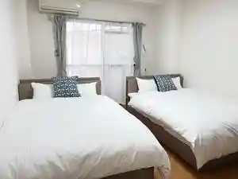
下関グランドホテル
Shimonoseki Gurandohoteru
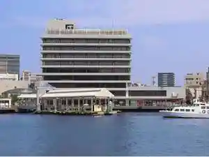
下関大坂屋ホテル
Shimonoseki Oosaka Ya Hoteru
唐戸セントラルホテル
Karato Sentoraruhoteru
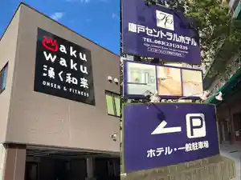
リゾナーレ下関
Rizonaare Shimonoseki
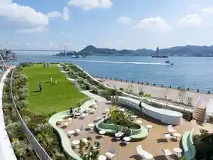
スカイハートホテル下関
Sukaihaatohoteru Shimonoseki
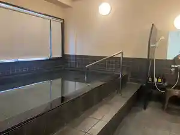
春帆楼本店
Shunpan Rou Honten
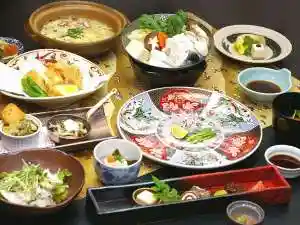
プラザホテル下関
Purazahoteru Shimonoseki
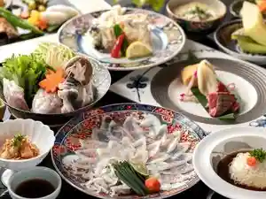
遊福旅館
Yuu Fuku Ryokan
壇之浦海峡ＶＩＬＬＡ
Dan Yuki Uromi Kyou V I L L A
ファミリーロッジ旅籠屋・壇之浦ＰＡ店
Famiriirojji Hatago Ya ・ Dan Yuki Ura P A Mise
東横ＩＮＮ下関海峡ゆめタワー前
Touyoko I N N Shimonoseki Kaikyou Yume Tawaa Mae
天然温泉 海響の湯 スーパーホテルPremier下関
Tennen Onsen Umi Kyou No Yu Suupaahoteru Premier Shimonoseki
天然温泉関門の湯 ドーミーインPREMIUM下関
Tennen Onsen Kanmon No Yu Doomiiin Premium Shimonoseki
グリーンホテル下関
Guriinhoteru Shimonoseki
ゲストハウス魯・竹崎
Gesutohausu Ro ・ Takezaki
下関で一年中新鮮なふぐ料理を堪能できる旅館 みもすそ川別館
Shimonoseki De Ichinenjuu Shinsen Nafugu Ryouri Wo Tannou Dekiru Ryokan Mimosuso Kawa Bekkan
ＪＲ西日本グループ ヴィアイン下関＜維新の湯＞
J R Nishinihon Guruupu Viain Shimonoseki ＜ Ishin No Yu ＞
下関ステーションホテル
Shimonoseki Suteeshonhoteru
スマイルホテル下関
Sumairuhoteru Shimonoseki
本格ふぐ料理が自慢 関門の宿 源平荘
Honkaku Fugu Ryouri Ga Jiman Kanmon No Yado Genpei Sou
KOKO STAY 下関
Koko Stay Shimonoseki
プリンスホテル下関
Purinsuhoteru Shimonoseki
割烹旅館寿美礼 ～下関で本場のとらふぐ料理を愉しむ宿～
Kappou Ryokan Sumire ~ Shimonoseki De Honba Notorafugu Ryouri Wo Tanoshi Mu Yado ~
下関駅西ワシントンホテルプラザ
Shimonosekieki Nishi Washintonhoterupuraza
海峡ビューしものせき
Kaikyou Byuu Shimonoseki
関門海峡を一望できる絶景の宿 満珠荘
Kanmonkaikyou Wo Ichibou Dekiru Zekkei No Yado Manju Sou
ＵＭＩ－ＩＲＯ～うみいろ下関～
U M I - I R O ~ Umiiro Shimonoseki ~